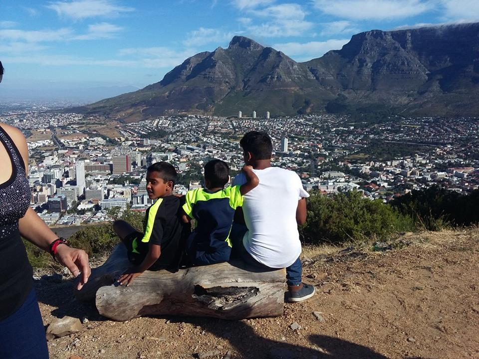
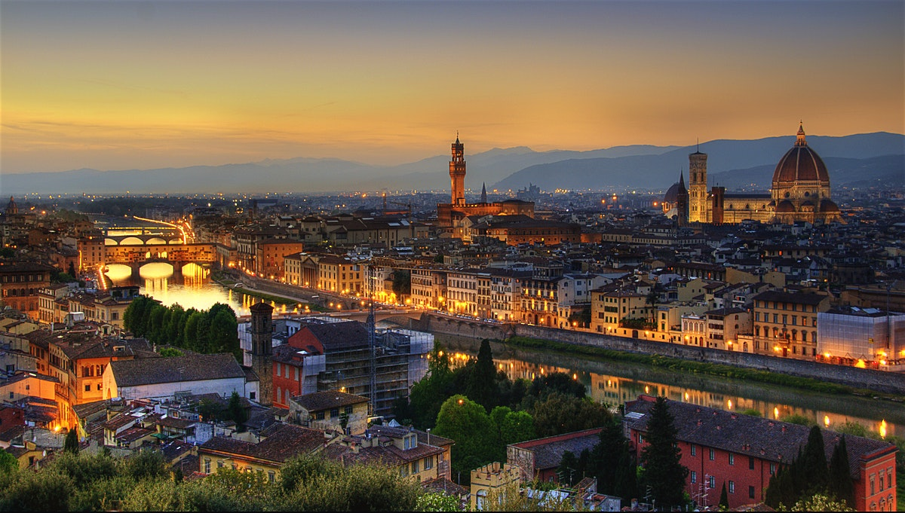
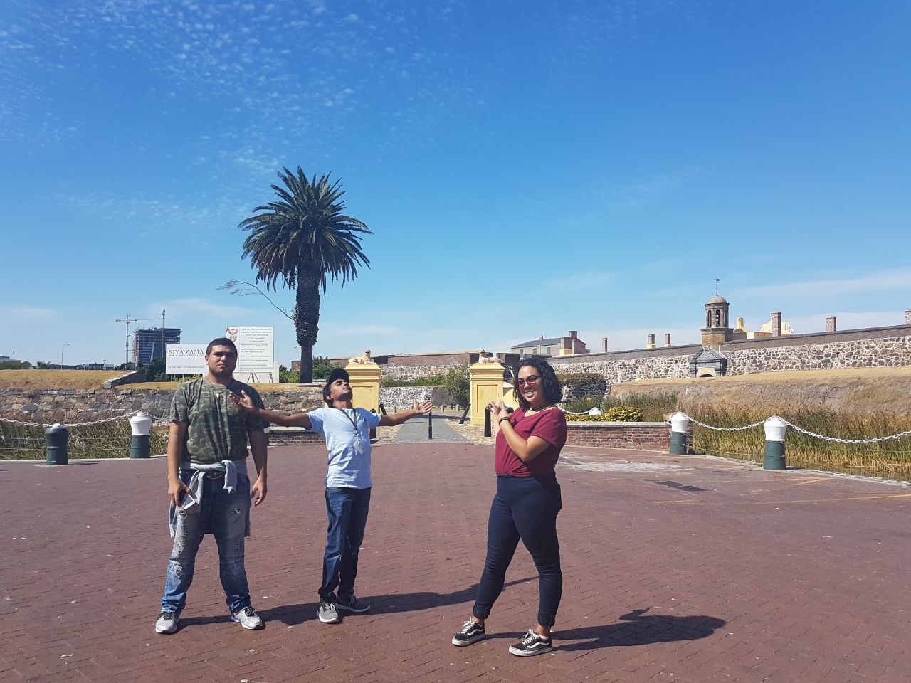

<!DOCTYPE html>
<html>
<head>
  <title>CodeX Website</title>
  <link rel="stylesheet" type="text/css" href="Skeleton.css">
  <link rel="stylesheet" type="text/css" href="new1.css">

  <meta name="viewport" content="width=device-width, initial-scale=1">

</head>


<body>

</html>
  <div id="background"></div>

  <section class="intro">
    <div class="introduction">
    <header>Welcome <span> to Cape Town</span></header>
  <h1>The Mother City</h1>
  <h2>Trinesh Chetty</h2>

  
</div>

</section>

<section class="florence">

<h1> Which City?</h1>
<h2>Florence, Italy</h2>
<div class="florenceCapital">

  <div class="container">
  <h3>Why, Florence?</h3>
  <h4>Charming, Full of History</h4>
  <span>Experience its beauty, Experience the Renaissance.</span>
  </div>

  <section class="list">
  
  <div class="florenceList">
    <ul style="list-style-type:none">
      <li>Little-known artistic and cultural gems</li>
      <li>Tuscan Wines</li>
      <li>Gastronomic Diversity</li>
      <li>Charming, scenic towns that surround Florence, and not just Siena</li>
      <li>Gardens</li>
      <li>Music</li>
      <li>Food markets</li>
      <li>Cocktails</li>
      <li>Gelato</li>
      <li>Artisans</li>
    </div>

  </div>
  </section>


<section class="foreignlanguage">
<h2>How do you say...</h2>
<table>
<thead>
  <tr>
    <th>Italian</th>
    <th>English</th>
  </tr>
</thead>
  <tbody>
    <tr>
      <th>Tu come ti chiami?</th>
      <th>What's your name? informal</th>
    </tr>
    <tr>
      <th>Mi potete aiutare</th>
      <th>Can you help me?</th>
    </tr>
    <tr>
      <th>L'Italia è bella</th>
      <th>Italy is beautiful  </th>
    </tr>
    <tr>
      <th>di dove sei?</th>
      <th>where are you from?</th>
    </tr>
  </tbody>
</table>
</section>


<div class="places">
  <h2>Historical Places in Cape Town</h2>

<div class="three columns">
<h3>Iziko Museum</h3>

<p>From an initial bequest of 45 paintings presented in 1871 by Thomas Butterworth Bayley, the collection of Iziko South African National Gallery has grown to one of international stature, encompassing substantial holdings of South African, African and Western European art. The richness of the foreign collection is almost entirely due to the munificence of the early patrons of the Gallery. The main building, designed by Clelland & Mullins (Public Works Department) and FK Kendall, was completed in 1930, with funds from the Government, the City Council and the Hyman Liberman Estate. Since then various improvements have been made to the building, including the introduction of climate control and an upgraded lighting system in 1991. The permanent collection contains particularly fine examples of British art and many leading artists of the early 20th century are represented, including members of the New English Art Club and those of the Bloomsbury Group. Works by John Walker, Michael Porter, Gary Wragg, Alan Davie and Ronald Kitaj were acquired in the 1980s. Under funding and the prohibitive prices of Western art have limited any significant additions to these collections.
</p>

</div>

<div class="three columns">
<h2>City Hall</h2>

<p>This is a large Edwardian building in the centre of Cape Town city. It was built in 1905, on the Grand parade, west of the Castle of Good Hope. Messrs Henry Austin Reid and Frederick George designed this building and is home to the Cape Philharmonic Orchestra, which performs concerts there regularly. It is located on the Grand Parade to the west of the Castle and is built from honey-coloured oolitic limestone imported from Bath in England. Inside, it’s a symphony of mosaic floors, old stained glass, a classic pipe organ and marble staircase. That bell tower at the Cape Town City Hall has an astounding 39 bells and reminds many visitors of London’s Big Ben.</p>


</div>


  <div class="three columns">
  <h3>The Castle</h3>
  

  <p>In 1652, the Dutch East India Company (DEIC) settled on the shores of Table Bay to establish a refreshment base for ships en route from Europe to East Asia, and to maintain its monopoly over the Spice Trade. Jan van Riebeeck, the first Commander of the Cape, erected the original Fort de Goede Hoop (Fort of Good Hope).
  As the threat of war loomed between the Netherlands and England, the DEIC ordered that a stronger stone fortress replace the original one to provide greater protection for the Dutch settlement. In 1666, Governor Zacharias Wagenaar laid the four cornerstones of the Castle of Good Hope. The majority of the work was carried out by soldiers and sailors.
  The five bastions of the Castle — Leerdam, Buuren, Katzenellenbogen, Nassau, and Oranje — were named after the main titles of Philip William, the Dutch Prince of Orange. Each of the bastions housed its own garrison, magazine, store rooms and specialized production centers like smithies and bakeries. </p>
</div>

</body>

</html>
